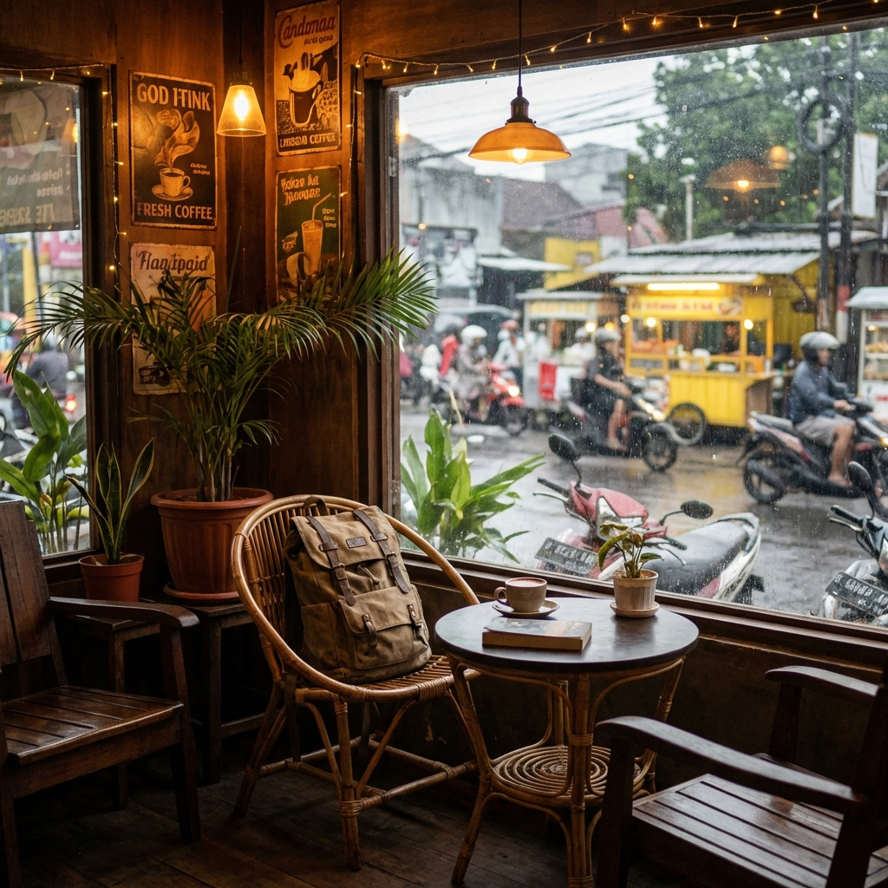

Menikmati momen "Golden Hour" di tengah hiruk pikuk kota.
Menikmati momen "Golden Hour" di tengah hiruk pikuk kota.
Table of Contents
Sering nggak sih kamu merasa iri melihat Instagram Story teman yang lagi liburan di Labuan Bajo atau Jepang, sementara kamu masih terjebak di meja kerja sambil menatap layar laptop yang mulai buram? Rasa takut ketinggalan momen seru atau FOMO (Fear of Missing Out) itu wajar. Tapi, pernahkah kamu memikirkan sisi sebaliknya?
Bayangkan skenario ini: Kamu sudah menghabiskan puluhan juta untuk liburan setahun sekali, tapi kamu melewatkan ratusan kesempatan kecil untuk bahagia yang sebenarnya ada di rute perjalanan pulang-pergi kantormu setiap hari. Dalam kerangka Regret Minimization, penyesalan terbesar seringkali bukan karena kita gagal pergi jauh, tapi karena kita gagal melihat keindahan di dekat kita. Kita hidup seperti turis di negeri orang, tapi jadi orang asing di kota sendiri.

Jangan sampai lima tahun lagi kamu baru sadar kalau taman kota di belakang gedung kantormu ternyata punya sunset yang magis, atau pasar tradisional dekat stasiun ternyata punya kopi legendaris, hanya karena kamu terlalu sibuk bermimpi tentang Eropa. Artikel ini bukan tentang tiket pesawat, ini tentang membuka mata, memanggul tas Teton andalanmu, dan menemukan "harta karun" yang selama ini bersembunyi di depan hidungmu.
"Kebahagiaan itu soal perspektif, bukan lokasi GPS. Kadang kemewahan itu adalah kesunyian di tengah keramaian."
Kisah dari Komunitas: Menemukan Ketenangan di Keramaian
Berikut adalah rangkuman cerita terbaik dari komunitas kami yang membuktikan bahwa kamu nggak perlu paspor untuk merasa "hidup".
1. Rooftop Parkir Gedung Tua (Versi Ardi, Jakarta)
Ardi, seorang desainer grafis, menemukan gem ini secara tidak sengaja saat menghindari ganjil-genap. Di salah satu gedung parkir tua di Jakarta Pusat, lantai paling atasnya ternyata sepi dan punya pemandangan gedung pencakar langit yang luar biasa saat senja. "Gue cuma bawa Teton gue, isinya kopi dingin sama sketch book. Duduk di kap mobil, angin sepoi-sepoi, dengerin playlist indie. Itu rasanya lebih mewah dari rooftop bar mahal di SCBD yang berisik," katanya. Poin Penting: Kadang kemewahan itu adalah kesunyian, bukan pelayanan bintang lima.
2. Perpustakaan Publik yang Baru Direvitalisasi (Versi Citra, Solo)
 Suasana kafe yang tenang atau perpustakaan bisa jadi tempat healing terbaik.Citra sering merasa penat dengan skripsi. Alih-alih ke coffee shop hits yang harganya bikin dompet mahasiswa menangis, dia mencoba masuk ke perpustakaan daerah yang baru direnovasi. "Ternyata tempatnya aesthetic banget, dingin, wifi kencang, dan gratis. Tas gue yang isinya laptop berat sama buku tebal tetap nyaman digendong karena padding-nya empuk. Gue bisa seharian di sana, produktif tapi tetap rileks," cerita Citra. Poin Penting: Fasilitas publik kita makin bagus, manfaatkanlah.
3. Jalur Pedestrian Sungai (Versi Budi, Surabaya)
Budi adalah pekerja kantoran yang hobi lari sore tapi malas kalau harus ke gym. Dia menemukan bahwa jalur inspeksi sungai di kotanya sudah rapi. "Pulang kerja, ganti baju di toilet kantor. Baju kotor masukin ke kompartemen bawah tas Teton yang terpisah, sepatu kerja masukin tas jinjing lipat. Lari 5K di pinggir sungai sambil liat lampu kota mulai nyala. Itu terapi gratis terbaik," ujarnya.
Fitur Tas yang Mendukung Gaya Hidup "Hybrid"
Belajar dari cerita Ardi, Citra, dan Budi, kita bisa melihat pola yang sama. Mereka butuh perlengkapan yang versatile atau serba bisa. Ibarat karyawan yang bisa multitasking tanpa mengeluh, tas kamu juga harus begitu.
- Kompartemen Terpisah (Organization): Kamu nggak mau kan, kabel charger laptopmu terlilit sama handuk kecil bekas cuci muka? Tas dengan banyak saku (organizer) membuat hidup lebih teratur. Keteraturan mengurangi stres kognitif.
- Estetika yang "Nyambung": Ini poin penting di Indonesia. Kamu butuh tas yang terlihat profesional saat dibawa meeting sama klien, tapi tetap terlihat keren dan rugged saat dipakai nongkrong di taman kota. Desain Teton yang klasik biasanya masuk di kedua dunia ini. Nggak terlalu formal kayak tas bapak-bapak, tapi nggak terlalu mencolok kayak tas pendaki gunung yang warnanya neon.
Seni "Slow Travel" Saat Commuting
Salah satu "Hidden Gem" terbesar sebenarnya adalah perjalanan itu sendiri. Kita terbiasa mengutuk kemacetan atau padatnya KRL. Padahal, kalau kita ubah perspektifnya, itu adalah waktu transisi.
Cobalah sesekali turun satu stasiun sebelum tujuanmu. Jalan kaki 15-20 menit sisanya. Eksplorasi gang-gang kecil yang kamu lewati. Siapa tahu kamu nemu warung soto enak yang legendaris atau toko buku bekas yang unik. Tas di punggungmu memastikan tanganmu bebas (hands-free). Kamu bisa memotret momen, memegang payung, atau sekadar mengayunkan tangan dengan bebas.
Penutup
Pada akhirnya, cerita-cerita di atas mengajarkan kita satu hal: Kebahagiaan itu soal perspektif, bukan lokasi GPS. Jangan menunggu sampai "nanti" untuk menikmati hidup. Jangan menunggu cuti disetujui HRD baru kamu mau tersenyum lebar. Gunakan tasmu, isi dengan barang-barang yang membuatmu nyaman, dan mulailah menjadi turis di kotamu sendiri.
Ingat kembali prinsip Regret Minimization. Sepuluh tahun lagi, kamu akan lebih menyesal karena menghabiskan masa muda cuma buat mengeluh di dalam kamar kos atau kubikel kantor, daripada mencoba belok ke jalan baru yang belum pernah kamu lewati saat pulang kerja. Discover your local stories, pack your bag, and go.
FAQ Relevan
Apakah tas Teton aman untuk membawa laptop saat eksplorasi kota?
Ya, rata-rata seri urban daypack dari Teton sudah dilengkapi padded laptop sleeve yang tebal dan suspended (menggantung, tidak menyentuh dasar tas). Ini melindungi laptop dari benturan saat tas diletakkan di lantai beton atau aspal kasar.
Apa tips agar tas tidak terlihat "bulky" saat dibawa masuk ke kafe sempit?
Gunakan fitur compression straps (tali pengencang samping) yang ada di tas. Tarik tali ini untuk memampatkan isi tas agar lebih ramping. Selain lebih estetik, ini juga menjaga beban tetap dekat dengan punggung sehingga lebih ringan dibawa.
Bagaimana kalau saya menemukan spot bagus tapi kotor/berdebu?
Material tas outdoor seperti Canvas atau Nylon 600D didesain abuse-friendly. Jangan takut kotor. Cukup tepuk-tepuk debunya. Justru goresan atau sedikit noda memberikan karakter (patina) pada tas yang menceritakan perjalananmu.
Barang apa yang wajib ada di tas untuk "Healing Dadakan"?
Selain dompet dan HP: Powerbank (penting!), tisu basah/kering, botol minum (hemat & ramah lingkungan), dan foldable tote bag (tas belanja lipat) buat jaga-jaga kalau kamu nemu jajanan atau barang unik di jalan.
Apakah cocok untuk pengguna transportasi umum (KRL/TransJakarta)?
Sangat cocok. Desain yang ergonomis dan ramping (terutama model 20-25 liter) memudahkan manuver di keramaian stasiun. Pastikan saja kamu menggendongnya di depan saat kereta padat demi keamanan dan etika.